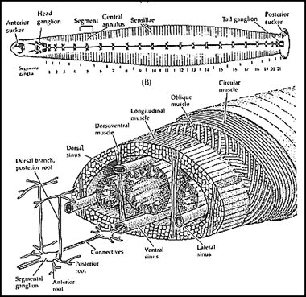

Tuesday, March the 16th, 2004
back to: title, date or indexes
Dobson was one of the few pamphleteeers of the 20th century who still took seriously the mediaeval theory of the Four Bodily Humours. To remind readers who have forgotten, and inform those who don't know, here is a commendably concise paragraph from “Humorous” Dobson, an unpublished essay by Marigold Chew:
Taking the Aristotelian elements in turn, the theory was as follows: earth is reflected in the body as black bile, air as yellow bile, fire as blood, and water as phlegm. From these derive the terms melancholic, choleric, sanguine and phlegmatic. Dobson never deviated from his belief that the theory was fundamentally correct. He tended towards melancholy.
And, it should be said, he was so convinced that he also subscribed to the related practice of bloodletting with leeches. Dobson was rarely ill, but when he was, he had a devil of a time trying to find a doctor who would treat him as he wished. On his 61st birthday, suffering from an excess of black bile, he was in luck—or so he thought. An “alternative therapist” had opened their doors just down the road. Dobson presented himself and demanded leeching. He was shown into a back room and lo!, leeches were applied to his spindly legs. Unfortunately, the quack used leeches of the genus Helobdella (Glossiphoniidae), rather than Hirudo medicinalis. The latter is, as its name implies, the medicinal leech. It is a quaint, dark cylinder which has thirty three body rings, five pairs of eyes, several pairs of testes and two suckers, one at each end of its body. The head sucker searches and penetrates while the tail sucker holds fast to the host.
The result of the wrong type of leech being used was so vile that I shall not repeat it here. Dobson was lucky to survive, but he did, thank the Lord. If you decide to have your blood sucked by leeches, take this helpful anatomical diagram of Hirudo medicinalis with you. You will be able to check that your practicioner is using the correct type of leech, and can rest easy.

Hooting Yard on the Air, November the 10th, 2004 : “Notes on Jellyfish” (starts around 05:27)
Hooting Yard on the Air, November the 2nd, 2005 : “Once Upon a Time” (starts around 14:19)